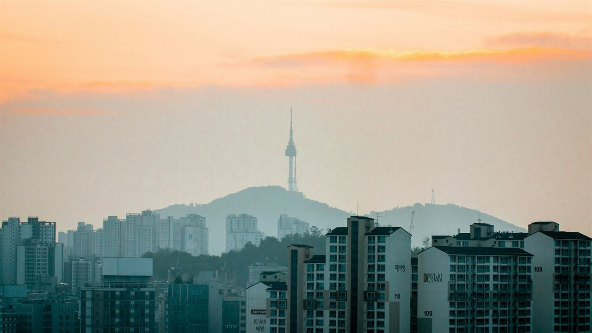
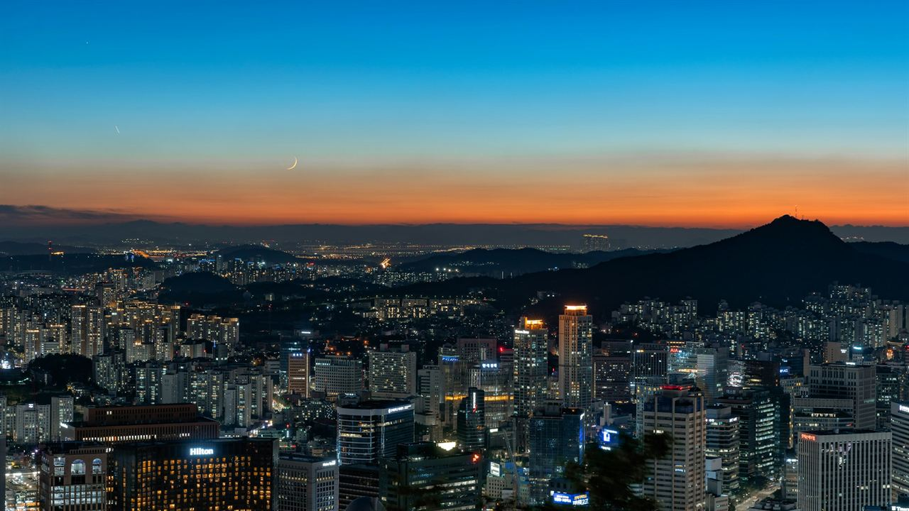

我们做什么
海外深度体检包含什么、要花多少钱，我们都会讲清楚，从亚洲的首尔、东京和上海开始。从 2027 年初起，在法律审核通过的前提下，我们希望为你介绍一位在当地照应你的持牌合作方。然后，由你决定。
只选认证医院
JCI 或本国认证，经我们核实。
指南优先
超出美国筛查指南的项目一律标为可选。
收入公开
在第一次介绍之前，我们会公布我们怎样获得收入、由谁付费、费率多少。
由你的医生决定
我们从不诊断，也不解读检查结果。
谁在照应你
谁在照应你

出发之前
“我花了四年时间衡量美国医疗项目的真实成本。同样的医疗，价格可能天差地别，而病人很少看得到价格，更看不到背后的原因。East&Well 的存在，就是让这两者都摆到明处。”
Joe Yang, 经济学博士 · 创始人
你的第一封信会先到我这里。告诉我你希望从体检中得到什么、什么时候能出行、预算多少。我会亲自回复。我从不提供医疗建议，那是你医生的事。
摄影：Mylène Larnaud
开放介绍后，我们为你介绍一位持牌合作方，依据你的目标挑选，绝不因为谁付我们更多。他们为你安排每一天，并在你预订前逐项报价。

摄影：Dominik Kuhn
协调员会在门口接你，陪你走完一整天。离开前，医生会用英文为你讲解结果。

摄影：charlesdeluvio
你会带着医生签字的英文报告和影像文件回家。如有发现，你会带回一份书面方案。你回家后，我们还会跟进。
指南怎么说
哪些检查该做，哪些可以不做。
我们的体检工具以美国筛查指南为准：这次旅行该做什么、什么可以以后再做、哪些在海外常被推销的附加项目可以不做，一目了然。
打开体检指南只需回答两个问题，无需注册。你的选择不会离开这个页面。
如果你有保险，这些检查很多在美国是免费的，我们会如实告诉你。
这次旅行该做的
1两份简短问卷情绪、饮酒
2乳腺 X 线摄影现在该做
3血压现在该做
4一次抽血丙型肝炎、艾滋病病毒
5结肠癌筛查现在该做
6宫颈筛查现在该做
以后再做
骨密度检查65 岁起，即 2033 年
常被推销 · 不适合你
颈动脉超声
甲状腺超声
心电图
低剂量胸部 CT
肿瘤标志物检测
胰腺癌筛查
卵巢癌筛查
全身 MRI
从这里开始
先从三座城市开始，为医疗品质而选。
体检只要一两天。剩下的时间属于你：一座你一直想去的城市，或一直想探望的家人。

费用
价格摆在明处。
以各机构公布的挂牌价为准。套餐内容不同，不含机票。来源和日期见各篇指南。
| 同济医院国际部基础体检 · Bookimed 预约平台，2026 年 | $377 |
|---|---|
| Hanshin MedipiaCreatrip 对比，2026 年 7 月 9 日更新 | $530–$2,300 |
| 延世 SeveranceCreatrip 对比，2026 年 7 月 9 日更新 | $610–$4,520 |
| 首尔大学医院江南Creatrip 对比，2026 年 7 月 9 日更新 | $980–$6,500 |
| 三星医疗中心Creatrip 对比，2026 年 7 月 9 日更新 | $1,520–$5,390 |
| 峨山医疗中心Creatrip 对比，2026 年 7 月 9 日更新 | $1,980–$15,500 |
| 美国本土，供参考Cleveland Clinic，俄亥俄州核心项目（男性）· 2024 年自费价目表 · 肠镜另加 $3,070 | $3,559 |
常见问题
我的保险会报销海外体检吗？
通常不会。大多数美国保险和 Medicare 都不支付计划性的海外医疗。如果你有保险，指南推荐的筛查在美国通常是免费的；在美国做更合理时，我们会直接告诉你。
我的医生会认可海外的检查结果吗？
把结果交给你的医生。大多数医生会审阅签字的英文报告和影像文件；有些会重做部分检查，这由他们决定。
如果查出问题怎么办？
离开前应该有医生向你解释。预约前，请向医院要一份针对异常结果的书面方案。下一步怎么做，由你和自己的医生决定。

摄影：Nellie Adamyan